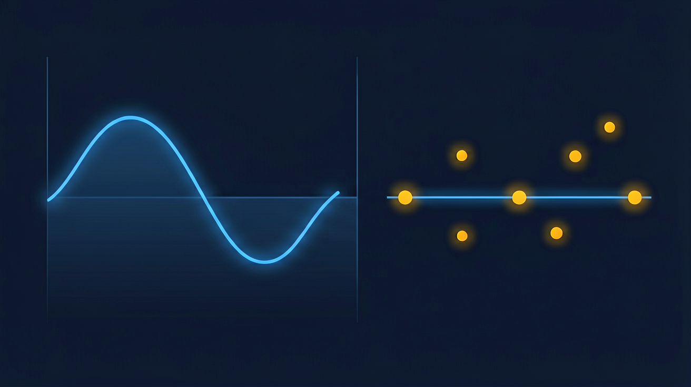

CGM vs BGM: How to Choose for Your Healthcare Business
Every medical manufacturer and distributor in glucose monitoring hits the same fork in the road: build around CGM, or build around BGM? While both lean on glucose oxidase or glucose dehydrogenase, the engineering is completely different.
In reality, it determines your R&D runway, regulatory budget, supply chain footprint, and the kind of revenue model you can sustain.
In this guide, we will cover everything between CGM and BGM for business needs only, and help you find a way to add CGM into your pipeline with the lowest efforts. Let’s get the ball rolling.
CGM and BGM Difference: What CGM vs BGM Readings Actually Measure
CGM measures interstitial fluid under the skin via an embedded enzyme electrode, generating 288 readings/day over a 7–14 day wear period. BGM measures capillary blood via single-use test strips coated in glucose oxidase, providing a single snapshot in time.
As glucose takes time to diffuse from blood into interstitial fluid, BGM’s reading is often in real time, and CGMS would usually have a 5-15 minute lag. Therefore, a CGM will often read lower than a same-moment BGM taken right after a meal, when the blood sugar is climbing fast, and read higher after a dose of insulin, when the blood sugar is dropping. Same person, same instant, two different numbers — and both are "correct" for what they're measuring.
If you're manufacturing a CGM, you have to bake the lag into the calibration algorithm. If you're selling one, you have to train support staff and write user instructions in case of a support queue full of "my CGM is wrong" complaints.

CGM vs BGM Accuracy: Which Is Better for Regulatory Approval?
One industry standard for measuring glucose monitor accuracy is MARD, Mean Absolute Relative Difference. This is a metric that measures, on average, how far a device's readings deviate from a laboratory reference value, expressed as a percentage. If a device has a MARD of 10%, its readings are off by 10% on average compared to a precise lab measurement. Lower MARD means higher point accuracy. A good MARD value is essential to every regulatory filing, clinical study, and marketing campaign.
By that measure, CGM systems typically report a MARD between 8-12%, compared with 5-6% for BGM. On paper, BGM is more accurate. However, regulators and clinicians have grown to accept the gap anyway. This is because continuous trend data from CGM can flag a rapid drop before it becomes an emergency, and that's worth more clinically than a single BGM reading being slightly more precise. CGM works best when your end users need early warning of rapid glucose swings, particularly drops into hypoglycemia.
In the U.S., CGM systems pursue the FDA''s integrated continuous glucose monitor designation, while BGM systems are generally classified as self-monitoring blood glucose systems, following a more established 510(k) pathway with accuracy benchmarked against ISO 15197.
That said, a BGM product can often reach market on a smaller clinical study and a leaner regulatory budget. A CGM product chasing iCGM status should plan for a longer timeline and a larger quality-system investment before the first dollar of revenue arrives.
CGM vs BGM reviews: what reddit and real users say
Search "cgm vs bgm reddit" and the pattern is consistent across threads and product reviews. CGM users praise the trend data and the ability to catch a low before it becomes a crisis. They complain, just as often, about sensors detaching early, accuracy wobbling during exercise, and the recurring cost of keeping sensors stocked. BGM users describe their devices as "boring but reliable": cheap, accurate enough day-to-day, free of the wearable's failure modes.
Adherence studies generally show CGM users reporting higher satisfaction, driven by fewer fingersticks and the safety net of high/low alerts. But CGM dropout is not rare. Sensor adhesive failures, skin irritation, and the ongoing cost of replacement sensors are recurring reasons users abandon CGM and return to BGM or stop monitoring altogether. For a manufacturer, this is a direct line to your churn number: a CGM with a weak adhesive or an uncomfortable applicator will bleed users even if the sensing chemistry underneath is excellent.
If your target market is tech-savvy patients with diabetes, CGM is the future. If you serve cost-sensitive or low-resource settings, BGM remains essential and its "boring reliability" is itself a selling point.
CGM and BGM devices in digital health: data integration compared
The real divide between CGM and BGM isn't clinical accuracy, but what happens after the reading is taken. BGM tells you what your glucose was. CGM tells you where it's going.
Data density and care model
BGM produces 4–10 manually logged readings per day, supporting only reactive care. CGM generates roughly 288 continuous readings daily, enabling trend analysis, pattern recognition, AI-driven insights, and real-time threshold alerts that allow clinics to intervene immediately rather than at the next scheduled visit.
Integration and B2B value
CGM systems like Dexcom G7 offer APIs that push glucose data directly into modern healthcare infrastructure such as EHRs, remote monitoring platforms, and telehealth workflows., while BGM data often requires manual transcription, increasing error risk. For B2B buyers, a clean, well-documented CGM API makes the device a far more attractive partner for telehealth and remote monitoring platforms than any BGM, regardless of sensor accuracy.
CGM vs BGM: a B2B decision framework for healthcare brands
Choosing between CGM and BGM is a strategic bet on where your portfolio, margins, and channel fit are heading. This following framework cuts through the hype and breaks down the data, barriers, and business models to help you decide what's right for your brand.
What the market data actually tells us
Grand View Research values the global CGM device market at $13.4 billion in 2025, projecting growth to $41.4 billion by 2033 at a 15.1% CAGR, and estimates the global BGM device market at $15.53 billion in 2025, growing at a slower rate than CGM but still maintaining steady demand.
The trade-offs in technology and margins
Faster growth doesn't come free. Here's what each side actually costs to build, and what it pays back.
CGM: High growth, but a steep hill to climb
CGM's growth potential comes with real barriers: biosensor R&D, wireless transmitter engineering, and an iCGM regulatory pathway that demands substantial clinical investment. Those same barriers, however, protect margins once overcome. One CGM unit typically cost end users $30 to $100 and requires replacement every 7 to 14 days. This makes the CGM business structurally closer to a subscription than a one-time device sale.
BGM: Steady demand, but a race to the bottom on price
BGM remains essential in hospital tenders, low-resource markets, and price-sensitive consumer segments that do not need or cannot afford continuous monitoring. But the low barrier to entry invites heavy competition, and test strip pricing has been under sustained pressure for years. BGM test strips typically run $0.20 to $1.00 each, a fraction of CGM's per-unit cost, but also yield far thinner margins per sale.
What to weigh before choosing your path
So which path should you take? Weigh these five factors against your organization's actual position.
Technology readiness. CGM means building a sensor, an app, alert logic, and a data-sharing backend, not just a sensor and a meter. If your team has never shipped regulated software, that reshapes your timeline and budget.
Capital investment. CGM development, clinical studies, and the iCGM pathway typically need a meaningfully larger budget than a comparable BGM launch.
Regulatory timeline. BGM reaches market faster on a standard 510(k). CGM's iCGM pathway takes longer and demands more clinical evidence.
Target market. Hospitals lean toward BGM's simplicity and track record. Retail and tech-engaged consumers are increasingly drawn to CGM.
Profit margins. CGM offers a recurring-revenue model with stronger margins but a steeper upfront cost. BGM offers thinner margins but a faster, cheaper route to revenue.
A rough rule of thumb: if your R&D budget clears roughly $5 million and you have genuine sensor expertise in-house, CGM is worth pursuing directly. If not, BGM, or a partnership into CGM technology, is the more sensible path than building capability from zero. For many manufacturers, the real answer is both: a hybrid strategy that serves hospital tenders with BGM while capturing the higher-margin CGM market under the same brand.
Where the products are sold and how they are bought
Hospital and clinic tenders still lean toward BGM. Cost, established reimbursement codes, and staff familiarity all favor BGM in institutional procurement, even as CGM adoption grows elsewhere. Tender evaluations in this channel weight upfront cost and supply reliability heavily — both of which favor BGM's simpler, more commoditized supply chain.
Retail and online channels are where CGM growth is concentrated. Expanding insurance coverage, direct-to-consumer and over-the-counter CGM products, and subscription-based sensor replacement are all pulling demand toward CGM in these channels. For distributors, the strategic signal is clear: CGM offers higher margins and recurring revenue from sensor replacement, while BGM remains essential for hospital tenders and price-sensitive markets.
What to expect with regulations and tenders
BGM typically follows a simpler regulatory path (Class II, 510(k)) and has established reimbursement codes in most major markets, which makes procurement and tender qualification relatively straightforward. CGM needs more extensive clinical data to support an iCGM or equivalent designation, but reimbursement coverage for CGM has been expanding steadily as insurers and national health systems recognize its clinical value for insulin-dependent patients.
A useful real-world illustration of this whole transition is Abbott. Abbott built its diabetes business as a traditional BGM manufacturer under the FreeStyle brand. Its first real attempt at a CGM was the FreeStyle Navigator, launched in the U.S. around 2008, a device that was technically ahead of its time but fell short commercially.
Abbott kept investing anyway, and in 2016-2017 launched FreeStyle Libre, a factory-calibrated CGM that did not require routine fingerstick calibration. Libre went on to become the most widely used CGM system in the world, with roughly six million users globally, and sustained investment through an early setback can still end in category leadership.
Launch your CGM pipeline with low effort using Refresh EverChek
Getting into CGM doesn''t have to mean years of R&D and millions in upfront investment. Refresh EverChek comes with a sub-8% MARD accuracy profile and a full 14-day wear time.
Instead of building capability from zero, you can leverage our flexible OEM/ODM frameworks or deploy Semi-Knocked Down (SKD) solutions. This SKD model allows regional brands to localize assembly, a critical advantage for lowering import duties and meeting local procurement requirements.
Our global clients typically went from initial inquiry to a launched CGM product line in six to twelve months, well short of the multi-year build a from-scratch CGM program typically requires.
Backed by full API/SDK data integration and robust regulatory documentation (including ISO 13485 compliance and biocompatibility validations), we enables brand to launch high-tier, custom-branded CGM products in months rather than years.
Frequently Asked Questions
What is the delay between BGM and CGM?
CGM readings lag behind BGM by 5-15 minutes because glucose moves from blood into interstitial fluid more slowly than it changes in the bloodstream.
What is MARD and why does it matter?
MARD (Mean Absolute Relative Difference) measures CGM accuracy by calculating the average percentage variance from a laboratory reference—the lower the percentage, the higher the accuracy. A MARD of 10% or lower is the threshold for non-adjunctive use, meaning patients can dose insulin based on CGM readings alone without fingerstick confirmation. An 8% MARD is considered excellent professional-tier performance, and sub8% represents the cutting edge of modern factorycalibrated accuracy. For a healthcare brand, a strong MARD is the critical data point that wins clinician trust and qualifies for institutional tenders against market leaders.
What are the FDA classifications for CGM and BGM?
CGM is classified under iCGM (integrated CGM), requiring premarket approval; BGM falls under SBGM (self-monitoring blood glucose) with less stringent requirements, generally following ISO 15197.
What are the main manufacturing challenges for CGM vs BGM?
CGM requires precise enzyme coating, sterilization, wireless transmitter assembly, and tight quality control. BGM manufacturing focuses on test strip consistency, low-cost production, and packaging stability.
Which market is growing faster, CGM or BGM?
Both are growing, but CGM faster: Grand View Research projects the CGM device market expanding from $13.4 billion in 2025 to $41.4 billion by 2033 (15.1% CAGR), versus BGM growing from $15.53 billion to $30.18 billion over the same period (8.8% CAGR).
Can CGM replace BGM for insulin dosing?
Most modern CGM systems are approved for non-adjunctive dosing, meaning patients can dose insulin based on CGM readings alone. That said, many clinicians still recommend a BGM confirmation reading for critical or high-stakes decisions.
How do CGM and BGM compare in data insights?
CGM generates roughly 288 readings per day, enabling trend analysis and AI-driven insights; BGM typically provides only 4-10 data points per day.
What regulatory pathway should I expect for CGM vs BGM?
In the EU, the gap is similarly real: CGM is classified under MDR as a Class IIb device, requiring Notified Body involvement and mandatory clinical investigation, while BGM falls under IVDR as a lower-risk Class B, following a self-declaration or Notified Body conformity route. For brands using a CGM SKD model with Refresh EverChek, CE registration support is typically part of the package, since the brand ultimately takes on regulatory responsibility for the finished device.
Can a manufacturer produce both CGM and BGM?
Yes, but the two require different production lines, different expertise, and separate regulatory filings. BGM is generally easier to build in-house; CGM, by contrast, calls for R&D capabilities most companies don't have in-house. One way around that gap is an SKD model like EverChek's, where it supplies a handful of pre-built CGM components, the sensor core, transmitter, applicator, adhesive patch, and battery unit, and your brand handles final assembly, packaging, and labeling locally, instead of developing sensor chemistry or calibration algorithms from scratch. That local-assembly step can also qualify the product for reduced import duties and local-content requirements in tenders.
How do I choose between CGM and BGM for my business?
It depends on your target channel: hospitals often favor BGM for cost and familiarity, while retail and online channels are shifting toward CGM for higher margins and growing patient demand. That said, CGM is catching on as the new trend, and you shouldn''t miss the chance. Consider going hybrid: keep BGM for institutional stability, but pilot CGM for consumer growth. With EverChek''s SKD or OEM solutions, you can add CGM without heavy R&D, and test the CGM market quickly, scale at your own pace, and turn the hybrid model into a real competitive advantage, not a fallback.